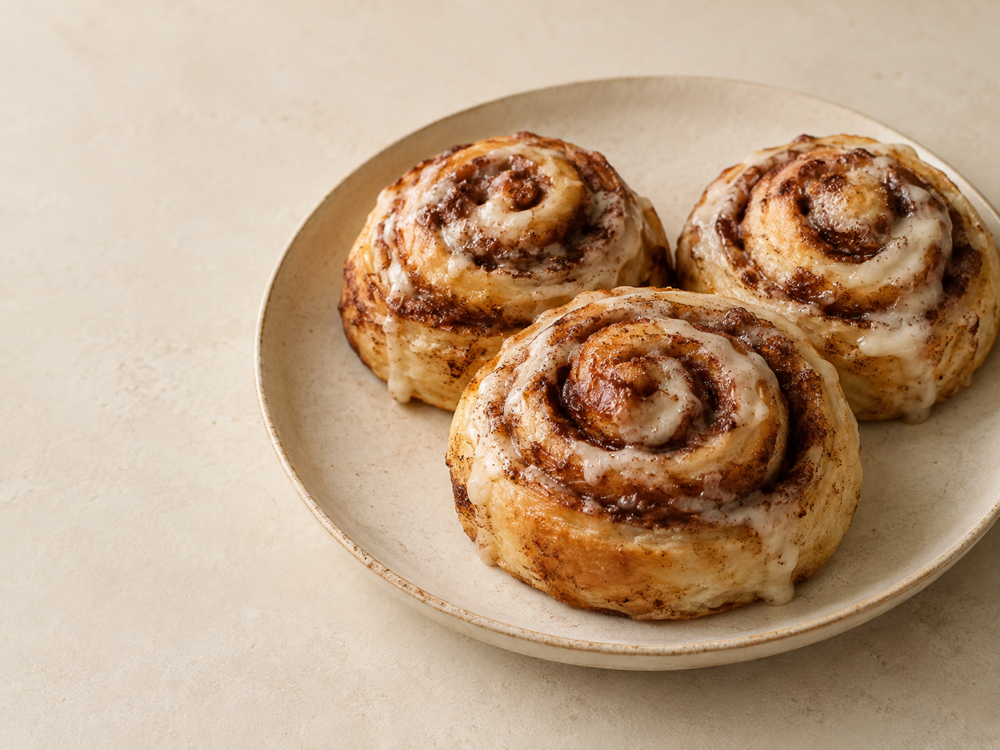
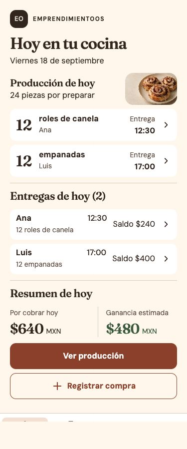
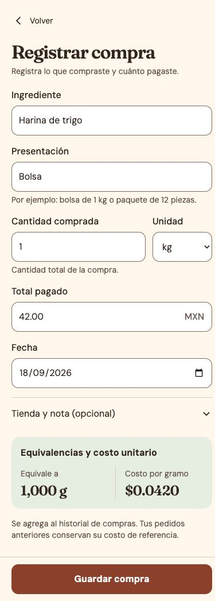
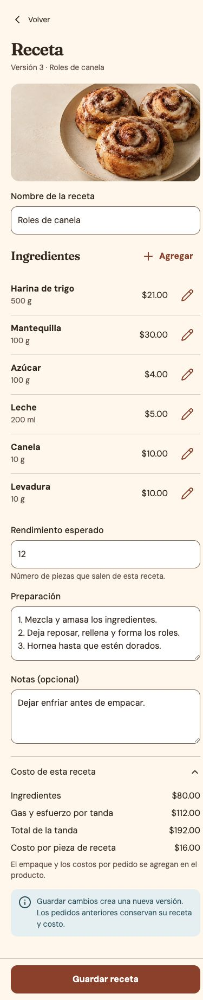
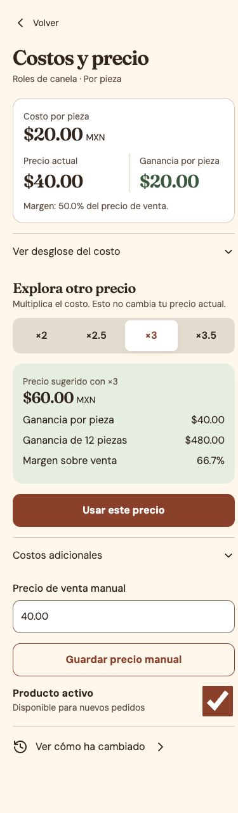
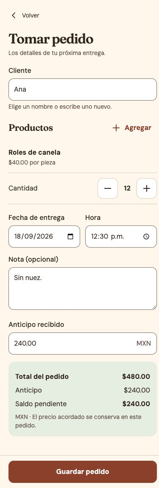
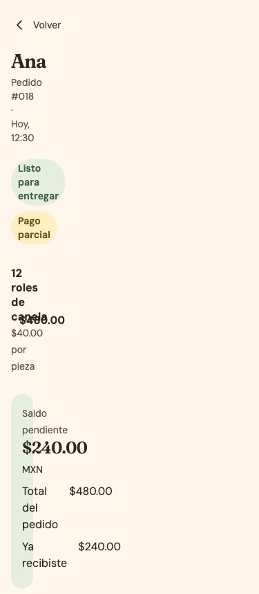
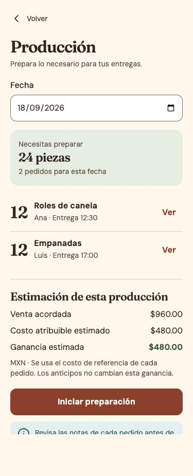
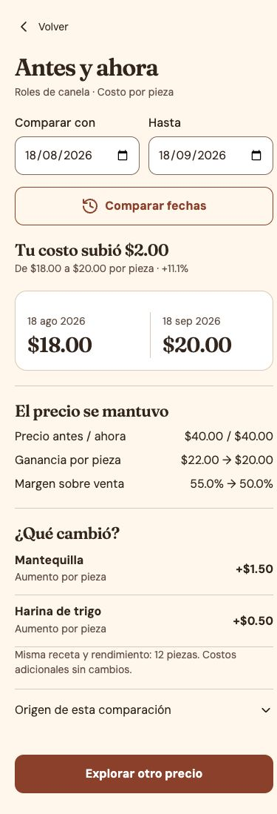
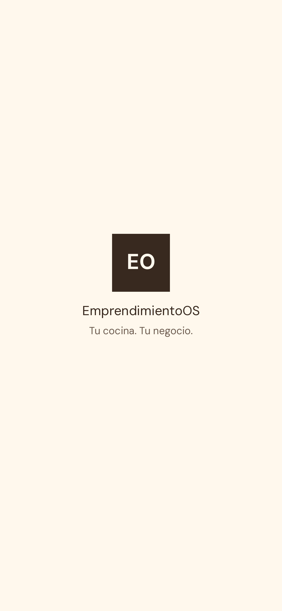

Espacio
00px04px08px12px16px20px24px32px40px48px64pxEmprendimientoOS · Brandbook v1.0
Cocina cálida artesanal: una identidad para trabajar con confianza, entender tus números y cuidar cada entrega.
A · Dirección aceptada

01 · Carácter
El trabajo abre la pantalla. La respuesta aparece antes del desglose. La persona registra lo que sabe; el sistema calcula y conserva la historia.
Wordmark DM Sans600 · monograma EO700 · área libre de media altura del contenedor. Nunca estirar ni añadir motivos decorativos.
02 · Color con significado
El rojo no convierte un saldo vigente en una urgencia. Los estados siempre se nombran. Los bordes de campos tienen más contraste que los separadores decorativos.
canvas
#FFF8ED
paper
#FFFFFF
ink
#38291F
muted
#6C5B4F
primary
#93482F
primary-pressed
#713620
positive
#466344
positive-soft
#EAF0E5
warning
#735211
warning-soft
#FFF0C7
danger
#922E25
danger-soft
#FFF0EB
info
#315C68
info-soft
#E9F0F3
line
#DCCFC0
input-border
#8A7565
disabled-bg
#E8E0D6
disabled-fg
#6C5B4F
focus
#38291F
nav-active
#F5E4D8
03 · Tipografía real
Fraunces600 para encabezados; DM Sans para interfaz. Las familias variables y sus licencias están incluidas. Tamaños en rem, sin impedir ampliación del texto.
hero · 32/38 px · 600
title · 28/34 px · 600
section · 22/28 px · 600
money · 28/34 px · 600
body · 16/24 px · 400
label · 16/24 px · 500
help · 14/20 px · 400
nav · 12/16 px · 600
04 · Sistema de trabajo
00px04px08px12px16px20px24px32px40px48px64pxCosto por pieza
$20.00 MXN
Tarjeta16 · control12 · foco2 + separación3 · objetivo48 · botón52.
320px:16 de margen.
390px:20 de margen.
Captura:max480.
Escritorio:max1120.
Presionado80ms · estado160ms · hoja220ms. Con movimiento reducido, sin animación.
05 · Iconografía
Lucide local, 24px, trazo de 2px. Los iconos acompañan etiquetas; los botones de icono tienen nombre accesible y área48px.
house.svgwheat.svgshopping-bag.svgbook-open.svgpackage.svgcalculator.svgtag.svgclipboard-list.svgcooking-pot.svgtruck.svgwallet.svghistory.svguser-round.svgcalendar-days.svgclock.svgbanknote.svgtrending-up.svgtriangle-alert.svgplus.svgpencil.svgtrash-2.svgsearch.svgellipsis.svgchevron-left.svgchevron-right.svgchevron-down.svgx.svgcheck.svgminus.svgloader-circle.svginfo.svgimage.svgwifi-off.svg06 · Correcto e incorrecto
$0.0420 por g
El costo unitario conserva su precisión.
Escribe un total mayor que $0. Tus otros datos siguen aquí.
¡Ana te debe!
$0.04 por g
El redondeo aparente pierde información.
Error. Vuelve a llenar todo.
El anticipo no se suma a la ganancia.
×3 no significa margen 300%.
Cobrado no significa entregado.
Sin costo no significa costo $0.
07 · Ocho recorridos
Referencias móviles en español, contratos de campos y estados. Los datos son ficticios y las interacciones no guardan información real.
Abre cada imagen para ver la captura completa. Las áreas de aquí permiten desplazar referencias largas.








08 · Recursos y handoff
Maestro1024 · exports192/512 · maskable512 · Apple180 · favicon.
Manifest de referencia
{kind=link}
{kind=link}
{kind=link}
{kind=link}
{kind=link}
{kind=link}
{kind=link}
{kind=link}